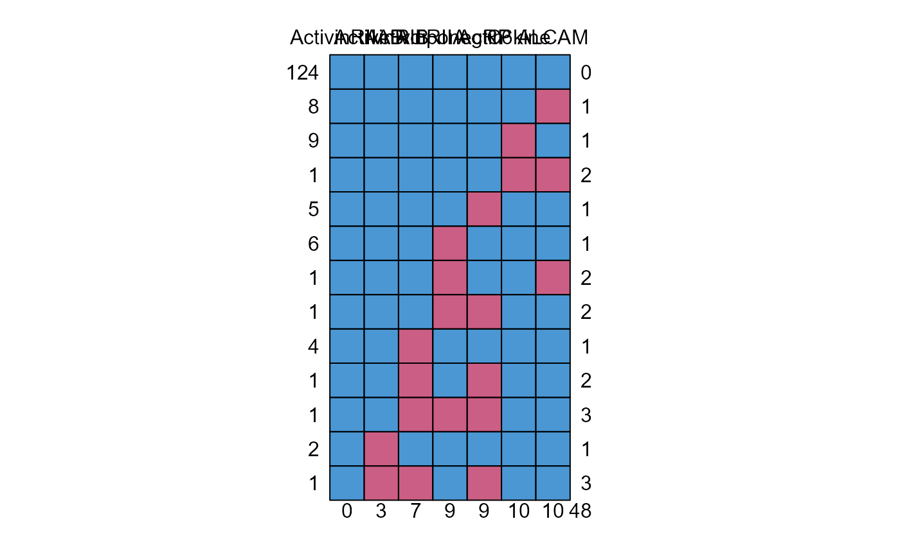

miipw.RmdThis is a vignette for our package ‘MIIPW’. It contains function for fitting GEE model for repeated measurement data. We have included mainly five function
We have included a repeated measured gene expression data in our package. Models are fitted to the dataset available in our package as below.
library(MIIPW)
#> Loading required package: lme4
#> Loading required package: Matrix
#> Loading required package: spatstat
#> Loading required package: spatstat.data
#> Loading required package: spatstat.geom
#> spatstat.geom 3.2-8
#> Loading required package: spatstat.random
#> spatstat.random 3.2-2
#> Loading required package: spatstat.explore
#> Loading required package: nlme
#>
#> Attaching package: 'nlme'
#> The following object is masked from 'package:lme4':
#>
#> lmList
#> spatstat.explore 3.2-6
#> Loading required package: spatstat.model
#> Loading required package: rpart
#> spatstat.model 3.2-10
#> Loading required package: spatstat.linnet
#> spatstat.linnet 3.1-4
#>
#> spatstat 3.0-7
#> For an introduction to spatstat, type 'beginner'
data("srdata1")
head(srdata1)
#> ID Visit C6kine ActivinRIB ActivinRIIA ActivinRIIAB Adiponectin AgRP
#> 5 2 1 1543.212 589.8966 277.3228 20377.32 10834.171 389.7555
#> 6 2 2 2130.282 820.4673 390.4100 38432.00 18354.472 560.1543
#> 7 2 4 1444.763 833.0092 459.7626 16478.16 8141.389 373.6979
#> 8 2 5 2661.616 860.1184 355.3753 26138.09 21286.228 506.2943
#> 9 3 1 2064.330 532.0388 435.7554 25176.20 7440.891 605.6970
#> 10 3 2 2341.346 579.0088 375.4292 24950.24 10418.850 608.5809
#> ALCAM
#> 5 77.70429
#> 6 63.06272
#> 7 NA
#> 8 54.20246
#> 9 66.67085
#> 10 71.75843
apply(srdata1,2,anyNA)
#> ID Visit C6kine ActivinRIB ActivinRIIA ActivinRIIAB
#> FALSE FALSE TRUE TRUE TRUE FALSE
#> Adiponectin AgRP ALCAM
#> TRUE TRUE TRUE
mice::md.pattern(srdata1[,-c(1,2)],plot = TRUE)
#> ActivinRIIAB ActivinRIB ActivinRIIA Adiponectin AgRP C6kine ALCAM
#> 124 1 1 1 1 1 1 1 0
#> 8 1 1 1 1 1 1 0 1
#> 9 1 1 1 1 1 0 1 1
#> 1 1 1 1 1 1 0 0 2
#> 5 1 1 1 1 0 1 1 1
#> 6 1 1 1 0 1 1 1 1
#> 1 1 1 1 0 1 1 0 2
#> 1 1 1 1 0 0 1 1 2
#> 4 1 1 0 1 1 1 1 1
#> 1 1 1 0 1 0 1 1 2
#> 1 1 1 0 0 0 1 1 3
#> 2 1 0 1 1 1 1 1 1
#> 1 1 0 0 1 0 1 1 3
#> 0 3 7 9 9 10 10 48Here we have considered the response model for C6kine, depending on the other covariates in dataset srdata1. Formula object below defines the model struture. Imputation model for the methods described in can be specified through the predictor matrix function available in mice package.
formula<-C6kine~ActivinRIB+ActivinRIIA+ActivinRIIAB+Adiponectin+AgRP+ALCAM
pMat<-mice::make.predictorMatrix(srdata1[names(srdata1)%in%all.vars(formula)])
m1<-MeanScore(data=srdata1,
formula<-formula,id='ID',
visit='Visit',family='gaussian',init.beta = NULL,
init.alpha=NULL,init.phi=1,tol=.00001,weights = NULL,
corstr = 'exchangeable',maxit=50,m=2,pMat=pMat)
summary_meanscore(m1)
#> $call
#> MeanScore(data = srdata1, formula = formula <- formula, id = "ID",
#> visit = "Visit", family = "gaussian", init.beta = NULL, init.alpha = NULL,
#> init.phi = 1, tol = 1e-05, weights = NULL, corstr = "exchangeable",
#> maxit = 50, m = 2, pMat = pMat)
#>
#> $inference
#> Estimates SE z value Pr(>|z|)
#> 1 567.21841632 245.53359200 2.3101459 0.02088008
#> 2 0.44342412 0.41962035 1.0567269 0.29063624
#> 3 0.20516067 0.68356833 0.3001319 0.76407654
#> 4 0.04499658 0.01026900 4.3817869 0.00001177
#> 5 -0.01668106 0.01295279 -1.2878346 0.19780353
#> 6 0.35735307 0.36797558 0.9711326 0.33148227
#> 7 -1.06174995 0.52137716 -2.0364336 0.04170684
#>
#> $phi
#> [1] 319620.3
#>
#> $Ralpha
#> [,1] [,2] [,3] [,4]
#> [1,] 1.00000000 -0.09635134 -0.09635134 -0.09635134
#> [2,] -0.09635134 1.00000000 -0.09635134 -0.09635134
#> [3,] -0.09635134 -0.09635134 1.00000000 -0.09635134
#> [4,] -0.09635134 -0.09635134 -0.09635134 1.00000000
#>
#> attr(,"class")
#> [1] "summary_meanscore"The summary_meanscore() and summary_ipw() summarises the results from fitted object obtained from meanscore and ipw functions. It provides the list of parameter estimates, wald statistics, p-value, phi value.
The inverse probability weighted method can be used through the function . Similarly we need to specify a predictor matrix for the imputation of score fucntion missing due to incomplete data. The argument takes the predictor matrix to be used in inside the function. The demo code for this model as follows :
m2<-SIPW(data=srdata1,formula<-formula,id='ID',
visit='Visit',family='gaussian',corstr = 'exchangeable',maxit=5)
m3<-AIPW(data=srdata1,
formula<-formula,id='ID',
visit='Visit',family='gaussian',init.beta = NULL,
init.alpha=NULL,init.phi=1,tol=.00001,weights = NULL,
corstr = 'exchangeable',maxit=50,m=3,pMat=pMat)
m4<-miSIPW(data=srdata1,
formula<-formula,id='ID',
visit='Visit',family='gaussian',init.beta = NULL,
init.alpha=NULL,init.phi=1,tol=0.001,weights = NULL,
corstr = 'exchangeable',maxit=50,m=2,pMat=pMat)
m1<-miAIPW(data=srdata1,
formula<-formula,id='ID',
visit='Visit',family='gaussian',init.beta = NULL,
init.alpha=NULL,init.phi=1,tol=.00001,weights = NULL,
corstr = 'exchangeable',maxit=4,m=2,pMat=pMat)The function provides the list of various model selection criterion based on quasi liklihood. The demo code is as follows
m1<-MeanScore(data=srdata1,
formula<-formula,id='ID',
visit='Visit',family='gaussian',init.beta = NULL,
init.alpha=NULL,init.phi=1,tol=.00001,weights = NULL,
corstr = 'exchangeable',maxit=50,m=2,pMat=pMat)
m11<-MeanScore(data=srdata1,
formula<-formula,id='ID',
visit='Visit',family='gaussian',init.beta = NULL,
init.alpha=NULL,init.phi=1,tol=.00001,weights = NULL,
corstr = 'independent',maxit=50,m=2,pMat=pMat)
QICmiipw(model.R=m1,model.indep=m11,family="gaussian")
#> QIC QICu Quasi Lik
#> 169.6232 485.0000 -78.5000
##